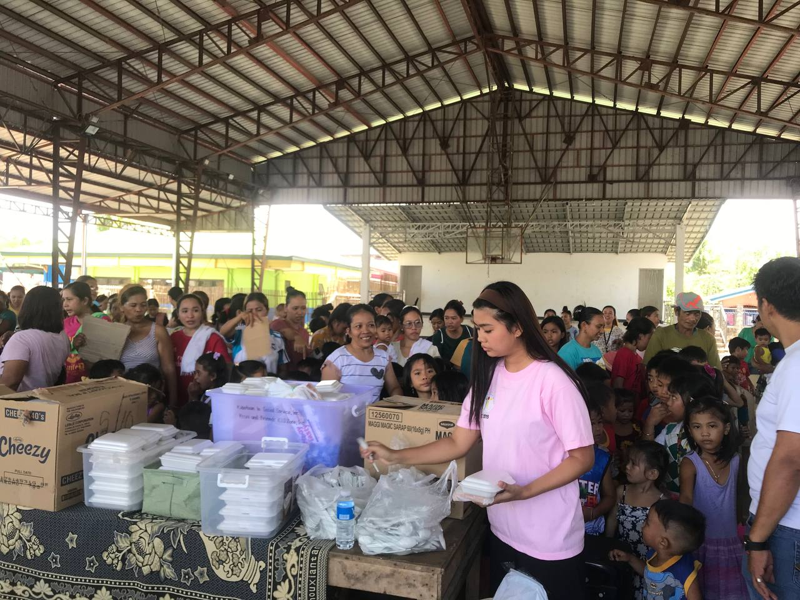

A YOUTH VOLUNTEER
that seeks hunger off the street
ERICA GUINTO is a dedicated youth volunteer actively fighting against street hunger by engaging with the community and identifying those in need. They organize food drives, partner with shelters, and distribute nutritious meals while fostering meaningful connections with individuals facing food insecurity. Through their efforts, ERICA GUINTO not only addresses immediate hunger but inspires others to join the movement for compassion and community support.